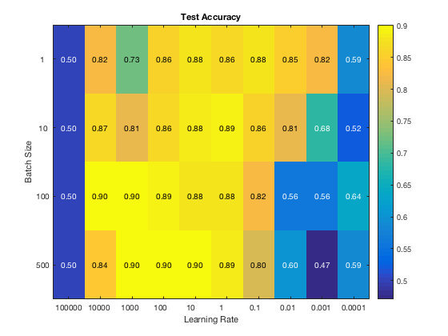
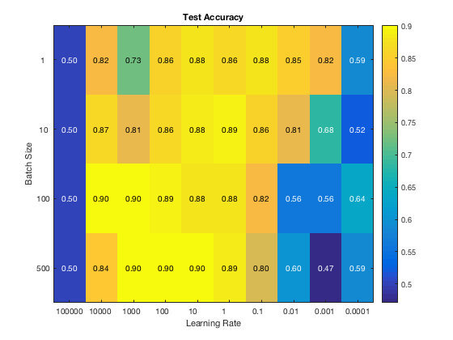

Contents
- Support Vector Machine Classification on MNIST digit data
- Primal Solution
- Gradient Descent with Line Search
- Gradient Descent with Backtracking
- Conjugate Gradient Descent with Line Search
- Stochastic Gradient Descent Hyperameter Optimisation
- Stochastic Gradient Descent Momentum Analysis(SGD)
- Dual Solution
- SMO
- Residual Redistribution Algorithm
- Residual Redistribution Algorithm: Modification 1
- Residual Redistribution Algorithm: Modification 2
Support Vector Machine Classification on MNIST digit data
Edward Brown: 16100321 Please Note this script takes approximately 5 minutes to run Thanks to Marta Betcke for providing the backtracking, linesearch and conjugate gradient functions. As well as her help and teaching throughout the course.
clear all, close all; % Initial Parameters rng(50); lambda = 0.1; nTrain = 100; [X,y,X_test,y_test] = load_data(nTrain); repeat_count = 10; ws = randn(repeat_count,size(X,2)); alpha0 = 100; c1 = 1e-4; tol = 1e-3; maxIter = 200; alpha_max = alpha0;
Primal Solution
Function definitions for use with tutorial code
F.f = @(w) cost(w, X, y, lambda); F.df = @(w) primal_derivative(w, X, y, lambda);
Gradient Descent with Line Search
Gradient Descent is performed with line search obeying strong Wolfe Conditions
lsOptsSteepLS.c1 = c1; lsOptsSteepLS.c2 = 0.3; lsFun = @(x_k, p_k, alpha0) lineSearch_new(F, ... x_k, p_k, alpha_max, lsOptsSteepLS); for i = 1:repeat_count [w, ~, nIterSteepLS(i), infoSteepLS] = ... descentLineSearch(F, 'steepest', lsFun, alpha0, ws(i,:), tol, maxIter); end meanSteepLS = mean(nIterSteepLS); stdSteepLS = std(nIterSteepLS);
Gradient Descent with Backtracking
Gradient Descent is performed with backtracking Conditions
lsOptsSteepBT.rho = 0.1; lsOptsSteepBT.c1 = c1; lsFun = @(x_k, p_k, alpha0) backtracking(F, ... x_k, p_k, alpha0, lsOptsSteepBT); for i = 1:repeat_count [~, ~, nIterSteepBT(i), infoSteepBT] = ... descentLineSearch(F, 'steepest', lsFun, alpha0, ws(i,:), tol, maxIter); end meanSteepBT = mean(nIterSteepBT); stdSteepBT = std(nIterSteepBT);
Conjugate Gradient Descent with Line Search
Conjugate Gradient is performed with the beta values for Polak-Ribiere and Fletcher-Reeves Conditions
% Polak Ribiere lsOptsCGPR.c1 = c1; lsOptsCGPR.c2 = 0.3; ls = @(x_k, p_k, alpha0) lineSearch_new(F, ... x_k, p_k, alpha0, lsOptsCGPR); for i = 1:repeat_count [~, ~, nIterCGPR(i), infoCGPR] = ... nonlinearConjugateGradient(F, ls, 'PR', alpha0, ws(i,:),... tol, maxIter); end meanCGPR = mean(nIterCGPR); stdCGPR = std(nIterCGPR); % Fletcher-Reeves lsOptsCGFR.c1 = c1; lsOptsCGFR.c2 = 0.1; ls = @(x_k, p_k, alpha0) lineSearch_new(F, ... x_k, p_k, 100, lsOptsCGFR); for i = 1:repeat_count w0 = randn(1,size(X,2)); [~, ~, nIterCGFR(i), infoCGFR] = ... nonlinearConjugateGradient(F, ls, 'FR', alpha0, ws(i,:),... tol, maxIter); end meanCGFR = mean(nIterCGFR); stdCGFR = std(nIterCGFR); % Plot Analyses plot(log(infoSteepLS.cost)); hold on; plot(log(infoSteepBT.cost));hold on; plot(log(infoCGPR.cost)); hold on; plot(log(infoCGFR.cost));hold on; % Format Plot title('Log Costs for random initial weighting') legend('Gradient Descent BackTracking',... 'Gradient Descent Line Search',... 'CG Polak-Ribiere',... 'CG Fletcher-Reeves') xlabel('Iteration') ylabel('Log Cost') figure c = {'Gradient Descent Back Tracking',... 'Gradient Descent Line Search',... 'CG Polak-Ribiere',... 'CG Fletcher-Reeves' }; means = [meanSteepLS,meanSteepBT,meanCGPR,meanCGFR]; bar(means) set(gca, 'XTickLabel',c, 'XTick',1:numel(c)) ax = gca; ax.XTickLabelRotation = -15; ylabel('Mean Iteration Count'); title('Mean Iteration Count until Convergence') % As the above graph shows, Polak-Ribiere was a much more effective that % Fletcher-Reeves. The simple gradient descent was comparably effective % with both backtracking and line search. The chart does not however enable % us to say which is preferable because the standard deviations were very % high, and each of the best 3 of four were all less than one deviation % from eachother.
Stochastic Gradient Descent Hyperameter Optimisation
This part was moved out to the function 'stochastic_hyper_parameter' due to its size
stochastic_hyper_parameter
 
 Stochastic Gradient Descent Momentum Analysis(SGD)
This section compares the results of SGD for simple gradient descent, gradient descent with momentum and one with a pre-evaluated gamma schedule.
[X,y,X_test,y_test] = load_data(1000); for i = 1:10 % Initialise Weight w0 = ws(i,:); % Assign SGD parameters sgdOpts.batch_size = 1; sgdOpts.learning_rate = 0.02; sgdOpts.tol = 10^-6; sgdOpts.lambda = lambda; sgdOpts.max_iter = 15; sgdOpts.gamma = 0.4; sgdOpts.gamma_init = 0.4; sgdOpts.gamma_final = 0.9; % Performs SGD for the three regimes sgdOpts.method = 'normal'; sgdOpts.learning_rate = 0.01; infoSGD = sgd_momentum_plan(X,y,X_test,y_test,w0,sgdOpts); sgdOpts.method = 'momentum'; sgdOpts.learning_rate = 0.01; infoSGDMom = sgd_momentum_plan(X,y,X_test,y_test,w0,sgdOpts); sgdOpts.method = 'plan'; sgdOpts.learning_rate = 0.01; infoSGDPlan = sgd_momentum_plan(X,y,X_test,y_test,w0,sgdOpts); % Plot cost graph for trial iteration if i == 1 figure; plot(log(infoSGD.costs)); hold on; plot(log(infoSGDMom.costs)); hold on; plot(log(infoSGDPlan.costs)); hold on; xlabel('Iteration'); ylabel('Cost') title('Cost by Iteration') legend('SGD', 'SGD w Momentum', 'SGD w Momentum schedule'); end sgdIter(i) = infoSGD.nIter; sgdIterMom(i) = infoSGDMom.nIter; sgdIterPlan(i) = infoSGDPlan.nIter; end figure plot(infoSGD.test_accs); hold on; plot(infoSGDMom.test_accs); hold on; plot(infoSGDPlan.test_accs); hold on; xlabel('Iterations') ylabel('Test Accuracy') legend('SGD', 'SGD w Momentum', 'SGD w Momentum schedule', ... 'Location', 'southeast'); title('Test Accuracy by Iteration')
Dual Solution
For this part we will employ a simplified version of the SMO algorithm (Platt 1999) and a descent algorithm of, to the best of my knowledge, my own making. Or at least, I cannot seem to find it elsewhere. There is a more than likely chance that there are algorithms which are the same as this one, or it is a very dumb version of other more sophisticated versions.
SMO
Here is a simplified form of the SMO. Found here: The Simplified SMO Algorithm. Autumn 2009. http://cs229.stanford.edu/materials/smo.pdf
% The algorithm was written with help from this resource: % https://uk.mathworks.com/matlabcentral/ % fileexchange/63100-smo--sequential-minimal-optimization- % Due to the algorithms size, it is run within this function % 'sequential_minimisation' sequential_minimisation % As you can see the algorithm originally arrives at decent accuracies % quite quickly.
train_accuracy =
0.9450
test_accuracy =
0.9160
Residual Redistribution Algorithm
Here is the fun part. Load Preprocessed Data
rng(42) [X,y,X_test,y_test] = load_data(1000); % Parameters % rng(42); C = 0.02; [data_size, dimensions] = size(X); % lambda = 2/(data_size * C); half_c = C/2; learning_rate = 0.0001; epochs = 60; ys = repmat(y,1,dimensions); K = (ys.*X)*(ys .* X)'; % Initialise weight/alphas vector alphas = half_c * ones(size(y)); % Start loop % Perform iteration for number of epochs for epoch_index = 1:epochs for i = 1:data_size old_alpha = alphas(i); % Update alpha using gradient of Lagrangian alpha_update = learning_rate * (1 - update_alpha(K(i,:),alphas,i)); % Clip Alpha to [0,C] new_alpha = old_alpha + alpha_update; new_alpha = min(C, new_alpha); new_alpha = max(0, new_alpha); % Assign updated alpha value alphas(i) = new_alpha; if isnan(alpha_update) disp('ERROR') end % Redistribute the residual. (A lot of hype for two lines of code) residual = y' * alphas; alphas = alphas - 1/sum(alphas) * (residual) * y .* alphas; end % Compute Accuracy after each pass w = compute_weight(alphas, y, X); bias = mean(y - (X * w')); train_acc(epoch_index) = mean(sign(prediction(w,X) + bias) == y); test_acc(epoch_index) = ... mean(sign(prediction(w,X_test)+ bias) == y_test); end % Output analysis figure;plot(test_acc) hold on;plot(train_acc) legend('Test', 'Train') title('Accuracy per pass') xlabel('Iteration') ylabel('Accuracy')
Residual Redistribution Algorithm: Modification 1
Redistribute less often Load Preprocessed Data
rng(42) [X,y,X_test,y_test] = load_data(1000); % Parameters % rng(42); C = 0.02; [data_size, dimensions] = size(X); % lambda = 2/(data_size * C); half_c = C/2; learning_rate = 0.0001; epochs = 60; ys = repmat(y,1,dimensions); K = (ys.*X)*(ys .* X)'; % Initialise weight/alphas vector alphas = half_c * ones(size(y)); % Start loop % Perform iteration for number of epochs for epoch_index = 1:epochs for i = 1:data_size old_alpha = alphas(i); % Update alpha using gradient of Lagrangian alpha_update = learning_rate * (1 - update_alpha(K(i,:),alphas,i)); % Clip Alpha to [0,C] new_alpha = old_alpha + alpha_update; new_alpha = min(C, new_alpha); new_alpha = max(0, new_alpha); % Assign updated alpha value alphas(i) = new_alpha; if isnan(alpha_update) disp('ERROR') end % Redistribute the residual less often! if rem(i,500) == 0 residual = y' * alphas; alphas = alphas - 1/sum(alphas) * (residual) * y .* alphas; end end % Compute Accuracy after each pass w = compute_weight(alphas, y, X); bias = mean(y - (X * w')); train_acc(epoch_index) = mean(sign(prediction(w,X) + bias) == y); test_acc(epoch_index) = ... mean(sign(prediction(w,X_test)+ bias) == y_test); end % Output analysis figure;plot(test_acc) hold on;plot(train_acc) legend('Test', 'Train') title('Accuracy per pass for modification 1') xlabel('Iteration') ylabel('Accuracy')
Residual Redistribution Algorithm: Modification 2
Don't Redistribute Load Preprocessed Data
rng(42) [X,y,X_test,y_test] = load_data(1000); % Parameters % rng(42); C = 0.02; [data_size, dimensions] = size(X); % lambda = 2/(data_size * C); half_c = C/2; learning_rate = 0.0001; epochs = 60; ys = repmat(y,1,dimensions); K = (ys.*X)*(ys .* X)'; % Initialise weight/alphas vector alphas = half_c * ones(size(y)); % Start loop % Perform iteration for number of epochs for epoch_index = 1:epochs for i = 1:data_size old_alpha = alphas(i); % Update alpha using gradient of Lagrangian alpha_update = learning_rate * (1 - update_alpha(K(i,:),alphas,i)); % Clip Alpha to [0,C] new_alpha = old_alpha + alpha_update; new_alpha = min(C, new_alpha); new_alpha = max(0, new_alpha); % Assign updated alpha value alphas(i) = new_alpha; if isnan(alpha_update) disp('ERROR') end end % Compute Accuracy after each pass w = compute_weight(alphas, y, X); bias = mean(y - (X * w')); train_acc(epoch_index) = mean(sign(prediction(w,X) + bias) == y); test_acc(epoch_index) = ... mean(sign(prediction(w,X_test)+ bias) == y_test); end % Output analysis figure;plot(test_acc) hold on;plot(train_acc) legend('Test', 'Train') title('Accuracy per pass: Modification 2') xlabel('Iteration') ylabel('Accuracy')